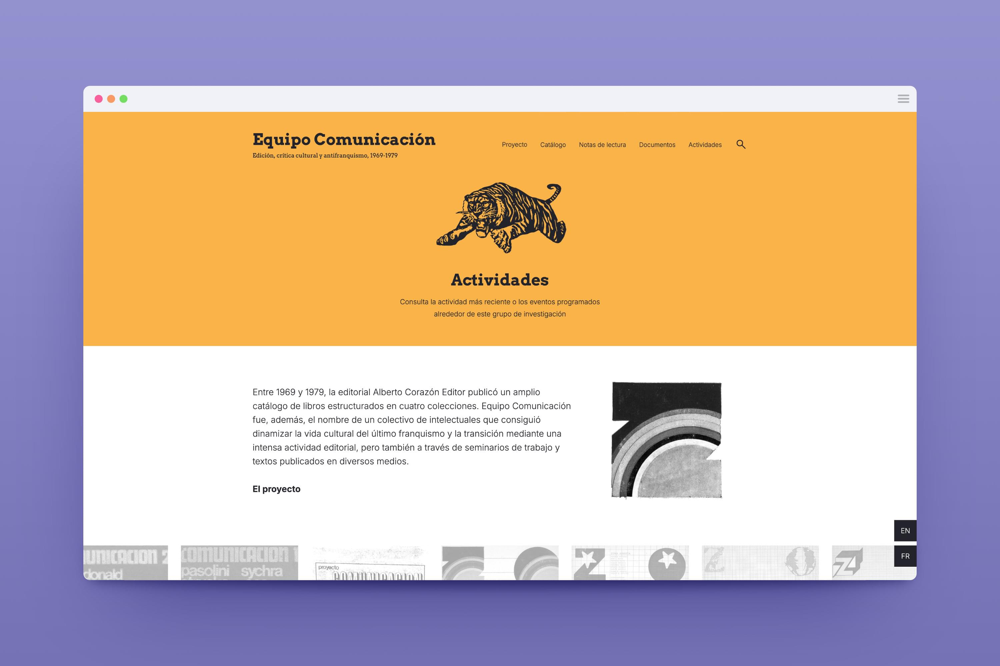
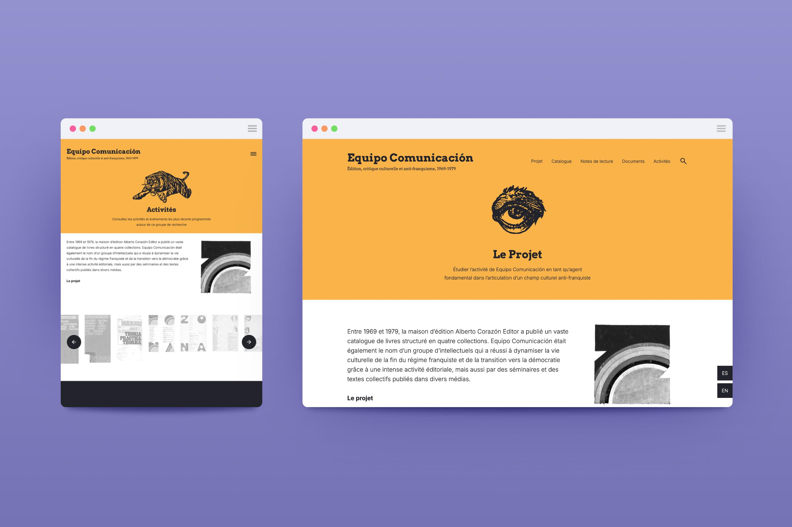
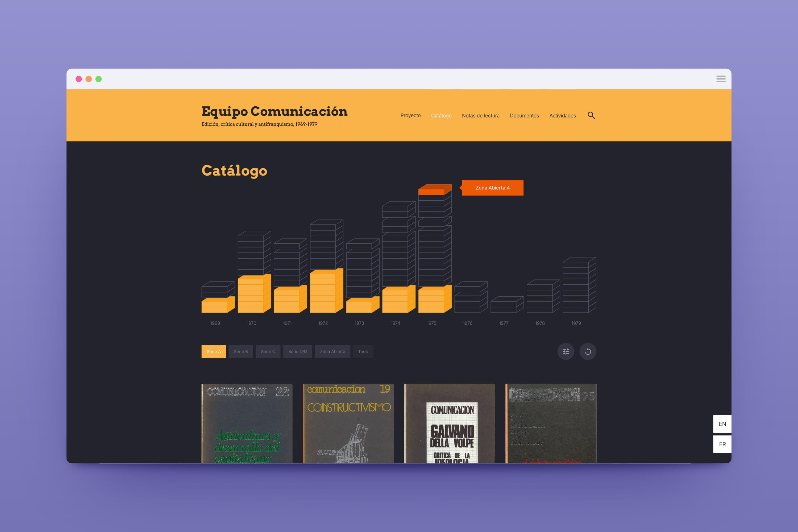
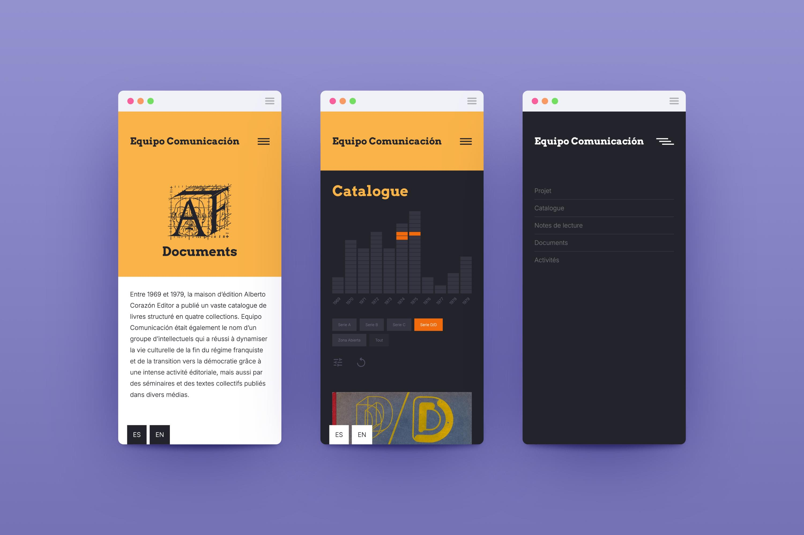
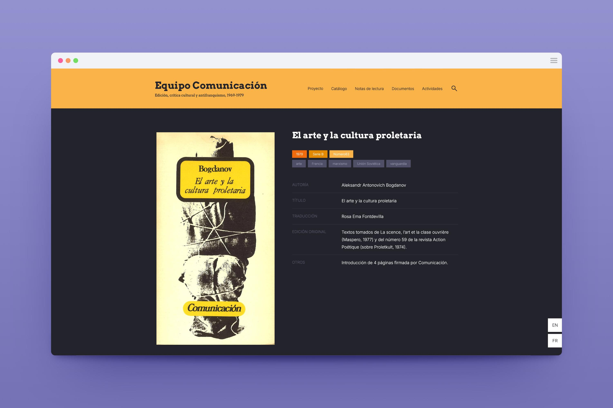
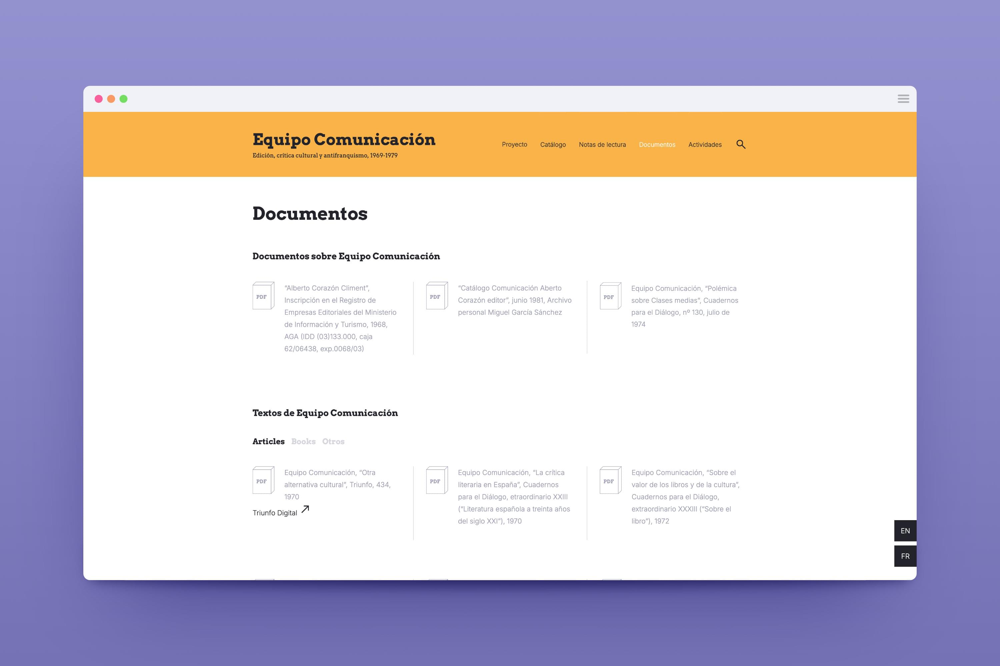

Between 1969 and 1979, the publishing house Alberto Corazón Editor published an extensive catalogue of books organised into four series. Equipo Comunicación was also a collective of intellectuals that revitalised cultural life during the late Franco era and the transition to democracy. I developed the online catalogue, which brings together the publications from that period and accompanying analytical documents.





